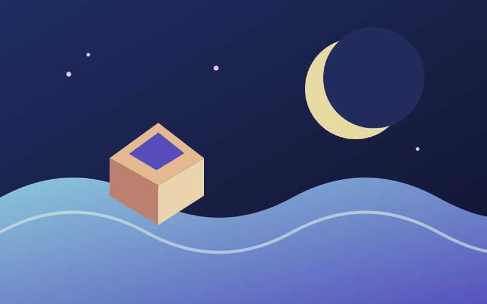
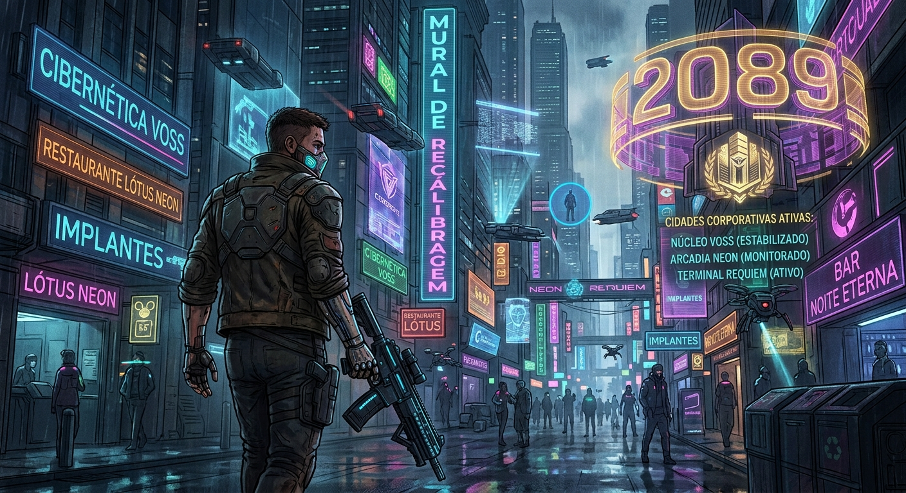
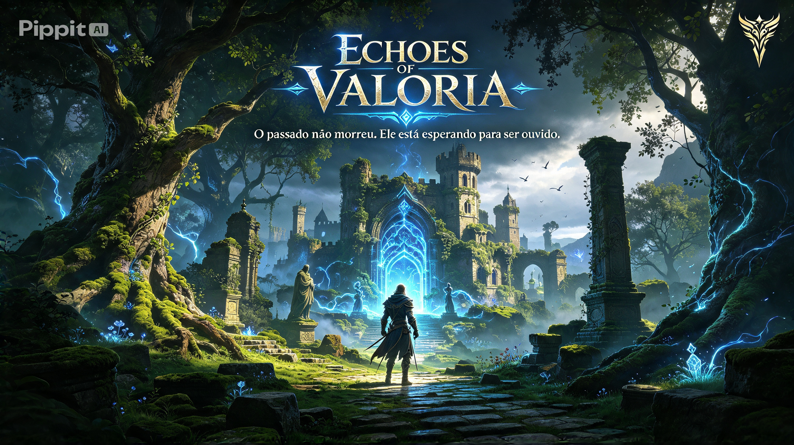
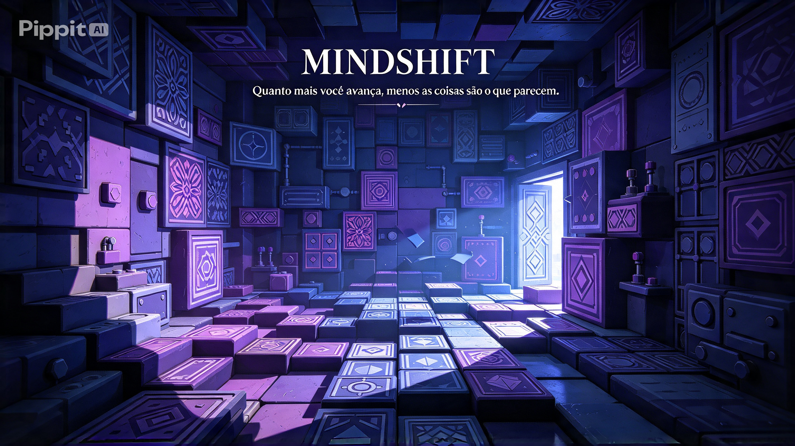
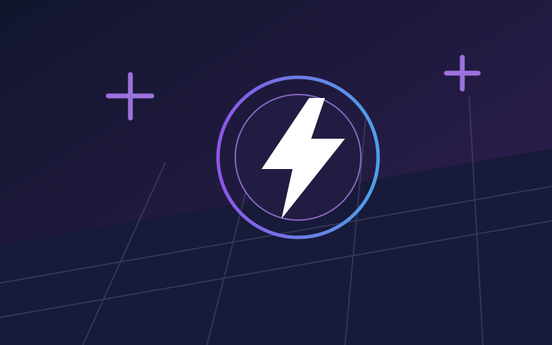
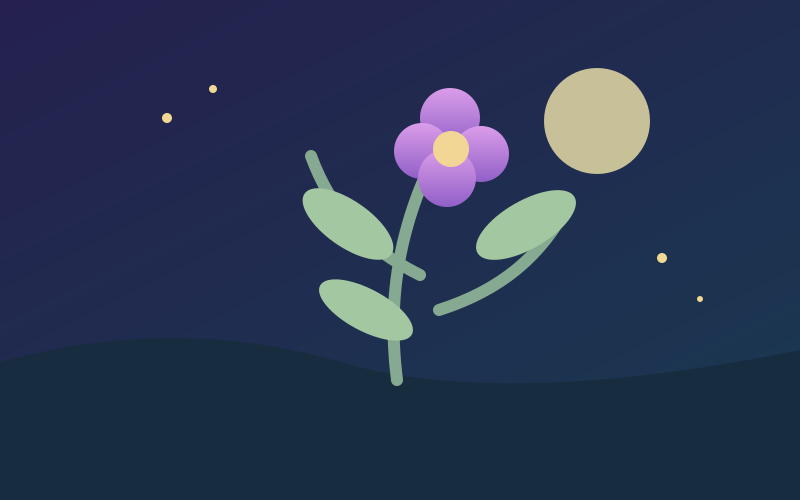
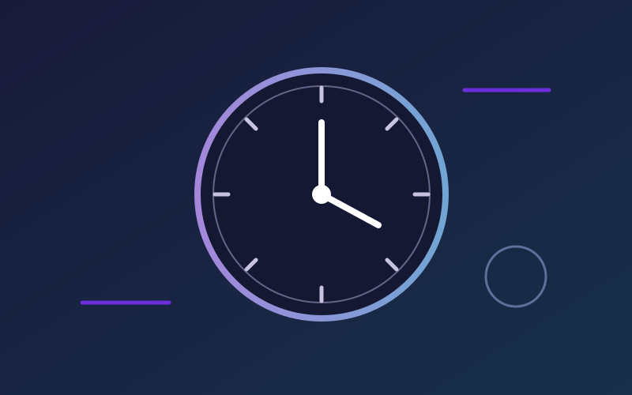
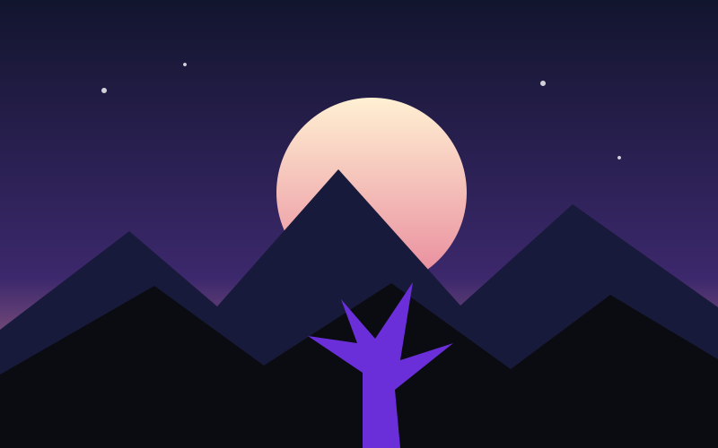
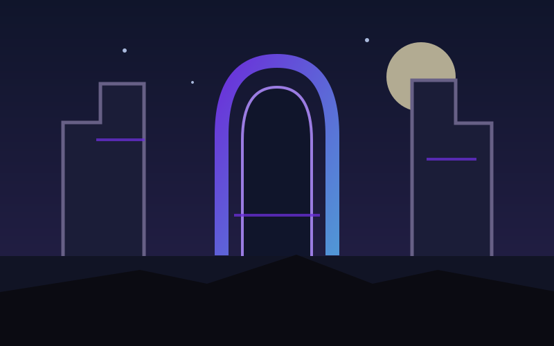

K.G.J. / NOVIDADES
Destaques
Os jogos que chegaram e as próximas aventuras a caminho.
JÁ DISPONÍVEIS
Lançados recentemente

LANÇAMENTO RECENTEDisponível desde 23 de setembro de 2026
Maré de Papel
Um mundo dobrado à mão, cheio de caminhos e histórias para descobrir.
R$ 24,90
Disponível na K.G.J.
Neon Requiem
Ação / FPS / Cyberpunk
A definir
Disponível na K.G.J.
Echoes of Valoria
Aventura / Fantasia / Exploração
Explore as ruínas de Valoria com Elian e siga os ecos ligados à antiga Canção.
A definir
Disponível na K.G.J.
Mindshift
Puzzle / Estratégia
Resolva enigmas, manipule padrões e explore salas onde nem tudo é o que parece.
A definir
12 de setembro de 2026
Neon na Veia
Ação
R$ 32,00
29 de agosto de 2026
Jardim de Outro Mundo
Relax
R$ 18,50
8 de agosto de 2026
Depois das Seis
Puzzle
R$ 21,90PRÓXIMAS AVENTURAS
Em breve

LANÇAMENTO PREVISTO30 de outubro de 2026
A Última Aurora
Explore um mundo no crepúsculo e descubra o que resta depois da última luz.
Preço em breve
LANÇAMENTO PREVISTO20 de novembro de 2026
Ruínas de Vértice
Resolva os enigmas de uma cidade esquecida e atravesse seus portais.
Preço em breve